An image-sharing interface with infinite scrolling and dark mode
Team project · 2 weeks · 3 frontend + 2 backend developers
Overview and role
Winterest is a Pinterest-inspired image-sharing project built over two weeks by three frontend and two backend developers. I implemented reusable feed components, pin saving, dark mode, and the frontend deployment to AWS S3.
Infinite scrolling and loading states
A custom infinite-scroll hook and masonry-style grid component serve the main feed, pin detail, and search pages. Color skeletons appear before the images load.
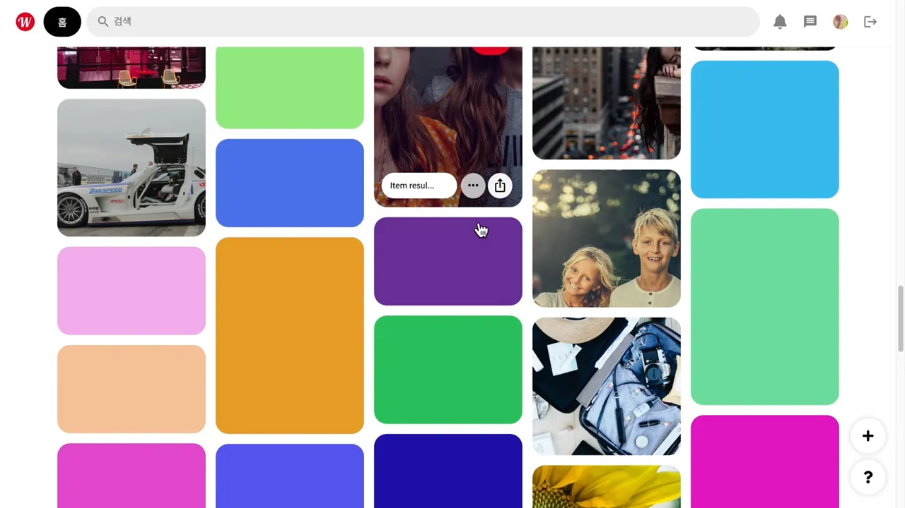
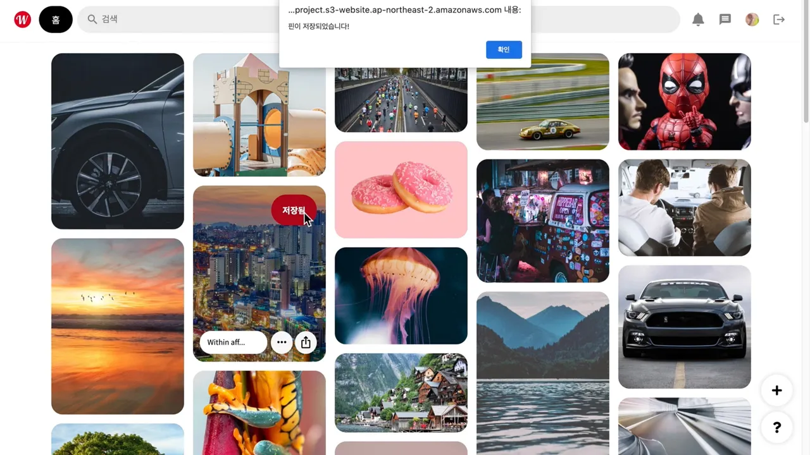
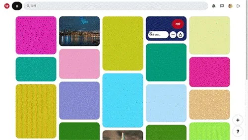
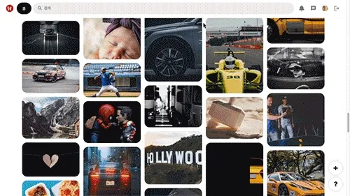
Pin details and personal collections
I implemented saving and unsaving pins, together with regular grid components for the personal page. The captures show the detail view, uploaded images, and saved-pin flow.
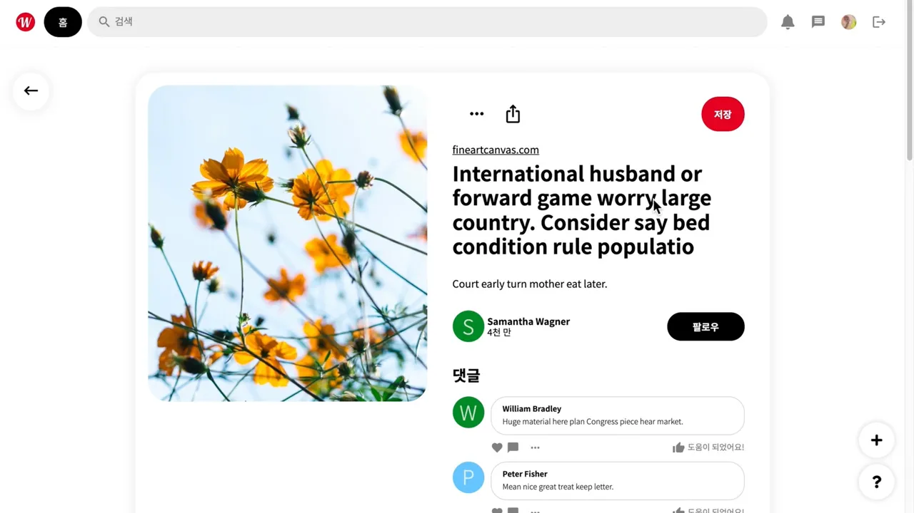
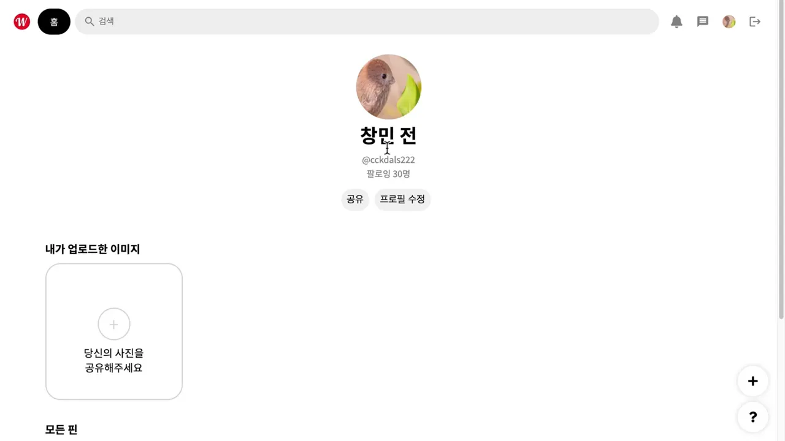
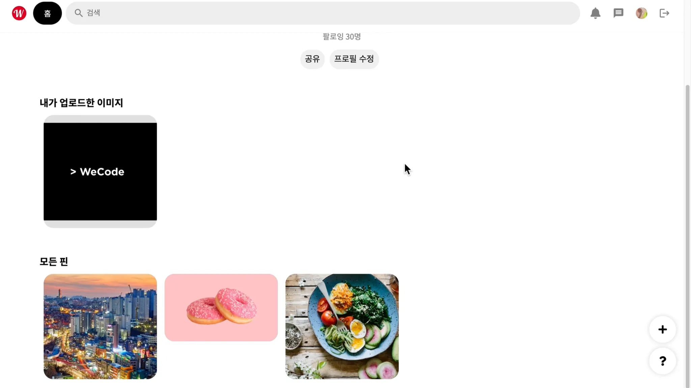
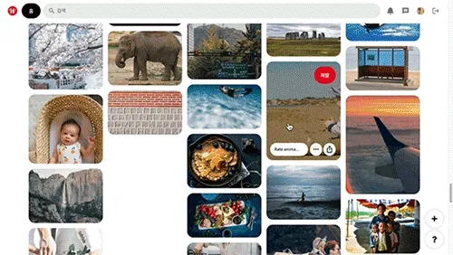
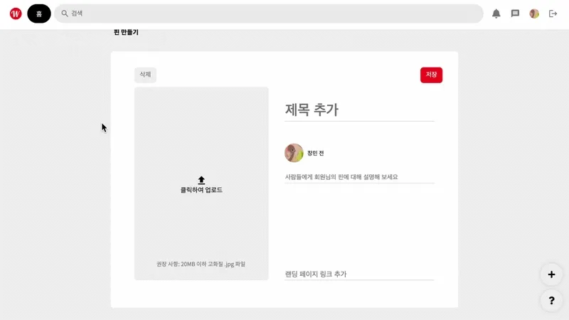
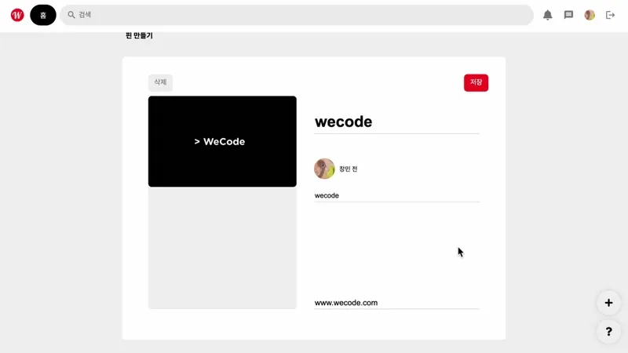
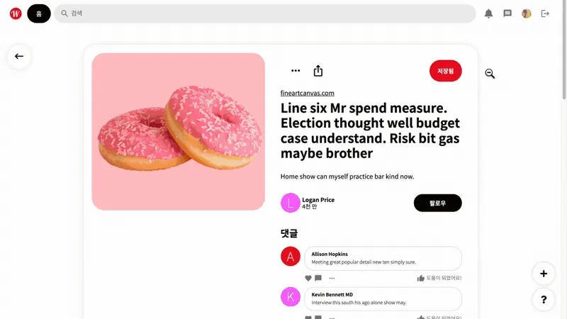
Theme state and deployment
I connected Redux state to the styled-components ThemeProvider to implement dark mode, and deployed the frontend to AWS S3.
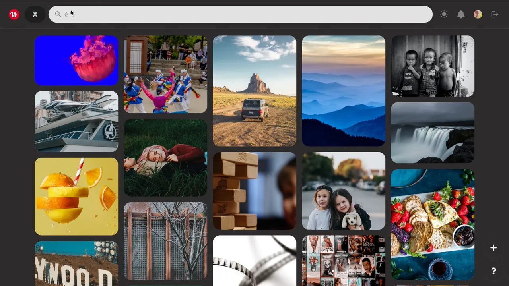
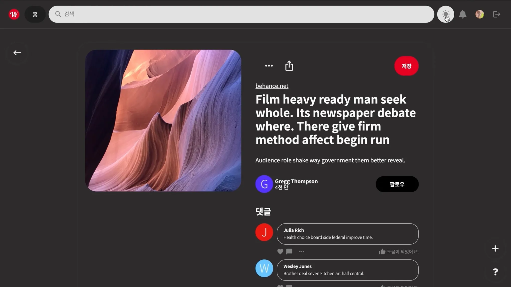
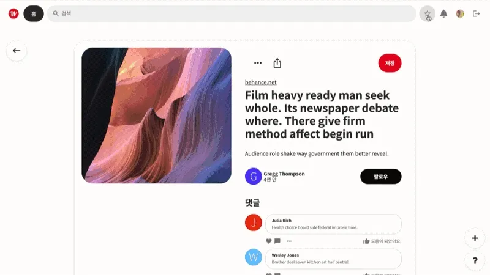
Tools and technologies
React Hooks · Redux · JavaScript · styled-components · HTML5 · AWS S3
Trello · Slack · Notion · GitHub · Postman